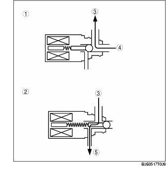

Shift solenoid D, and E (on/off type) operation
ON : When the electrical current flows, the output port and the supply port (solenoid reducing pressure) are engaged in the solenoid, and the output pressure becomes equivalent to the solenoid reducing pressure.
OFF : When the electrical current does not flow, the output port and the drain port are engaged in the solenoid, and the output pressure is drained.
